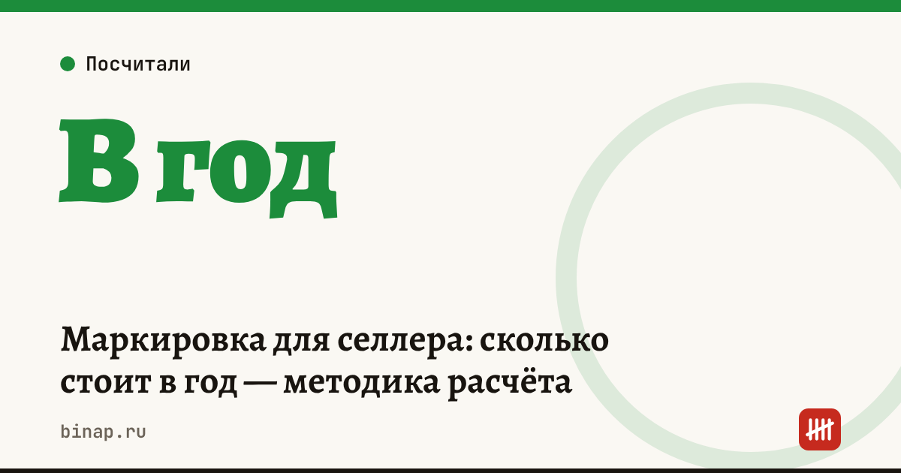

Маркировка для селлера: сколько стоит в год — методика расчёта

Расходы селлера на маркировку складываются из двух частей: переменной — коды маркировки на каждую единицу товара — и постоянной: ЭДО, программа или сервис, принтер, этикетки и время на работу с системой. Посчитайте обе на своём объёме — и прибавьте затраты на одну единицу к себестоимости в юнит-экономике.
Коротко
- Переменные расходы — коды маркировки на каждую единицу товара: цену кода смотрите в тарифах оператора «Честный знак» для своей категории.
- Электронная подпись для ИП и руководителя компании выдаётся в удостоверяющем центре ФНС бесплатно; носитель — за свой счёт.
- Для работы с маркировкой нужен электронный документооборот (ЭДО) — у операторов бывают платные тарифы.
- Принтер этикеток, этикетки и программа — разовые и регулярные расходы.
- Годовые затраты делите на число проданных единиц — так вы увидите маркировку в себестоимости.
Сроки, изменения и разборы для ИП и самозанятых — каждое утро в Telegram и MAX. Подпишитесь, чтобы не пропустить.
Из чего складываются расходы
| Статья | Тип | Как посчитать |
|---|---|---|
| Коды маркировки | переменная | число единиц × цена кода по тарифу оператора |
| Электронная подпись | разовая | бесплатно в УЦ ФНС + носитель |
| ЭДО | постоянная | тариф оператора ЭДО в год |
| Программа или сервис маркировки | постоянная | подписка в год или бесплатный личный кабинет |
| Принтер этикеток | разовая | стоимость ÷ срок службы в годах |
| Этикетки и расходники | переменная | число единиц × цена этикетки |
| Время | постоянная | часы в месяц × стоимость часа |
Формула
Годовые расходы = единицы × (цена кода + цена этикетки) + ЭДО + сервис + принтер ÷ срок службы + время.
Маркировка на единицу = годовые расходы ÷ число единиц.
Пример
Расчёт редакции, все цены условные — подставьте свои по тарифам на дату расчёта.
| Статья | За год |
|---|---|
| Коды: 20 000 единиц × 0,60 ₽ | 12 000 ₽ |
| Этикетки: 20 000 × 0,40 ₽ | 8 000 ₽ |
| ЭДО | 6 000 ₽ |
| Сервис маркировки | 12 000 ₽ |
| Принтер 15 000 ₽ на 3 года | 5 000 ₽ |
| Время: 4 часа в месяц × 500 ₽ | 24 000 ₽ |
| Итого | 67 000 ₽ |
На единицу: 67 000 ÷ 20 000 = 3,35 ₽. При цене товара 500 ₽ это меньше 1% — но при цене 100 ₽ уже больше 3%. Добавьте эту сумму к себестоимости в калькуляторе юнит-экономики.
Сервис для маркировки и работы с «Честным знаком»: ссылка
Как сократить расходы
- Покупайте коды под план продаж, а не «на год вперёд»: неиспользованные коды — замороженные деньги.
- Сравните бесплатные инструменты оператора с платными сервисами по времени, которое они экономят.
- Если товаров мало, время на ручную работу может стоить дороже подписки — считайте.
Что будет, если опоздать с маркировкой — штраф за просрочку. Маркировка для самозанятых — что изменилось с 1 октября. Все шаги продавца — в разделе «Селлерам».
Частые вопросы
Сколько стоит один код маркировки? Цена зависит от категории товара и устанавливается оператором. Смотрите актуальный тариф в личном кабинете «Честного знака» на дату покупки.
Нужна ли платная электронная подпись? Для ИП и руководителя компании подпись выдаёт удостоверяющий центр ФНС бесплатно. Платить нужно только за носитель, если его нет.
Можно ли работать с маркировкой без платной программы? Да, у оператора есть бесплатные инструменты. Платный сервис нужен, когда объём большой и ручная работа отнимает много времени.